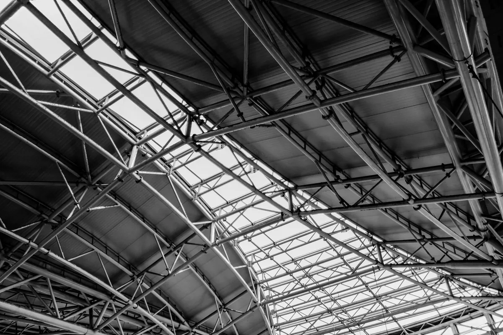
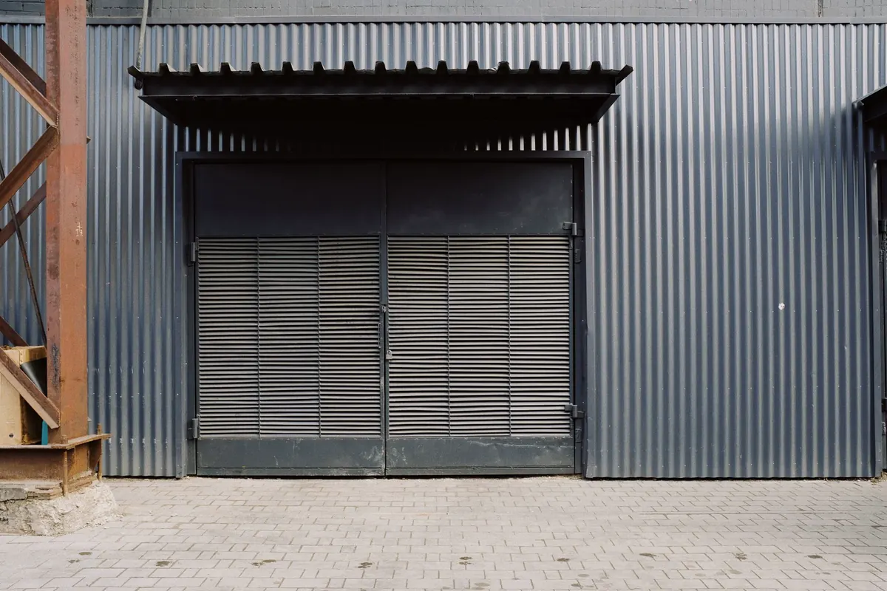
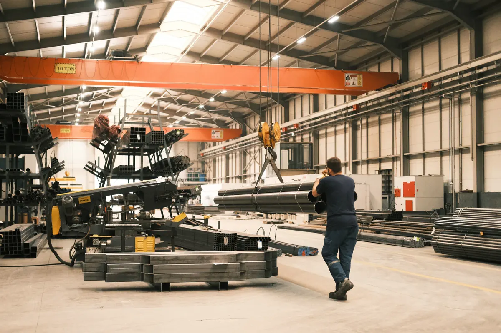
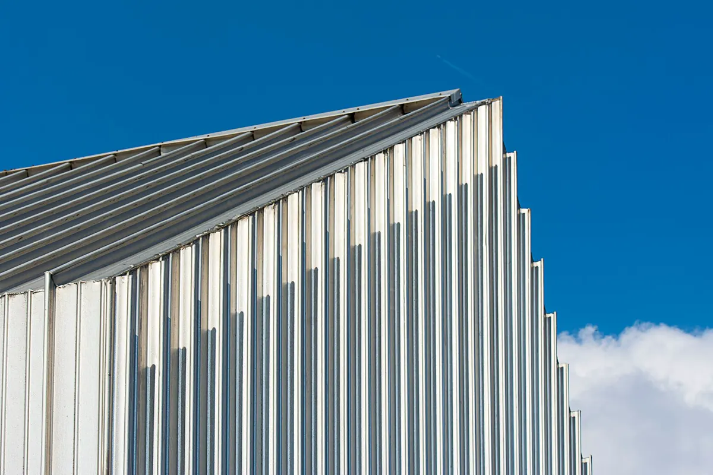
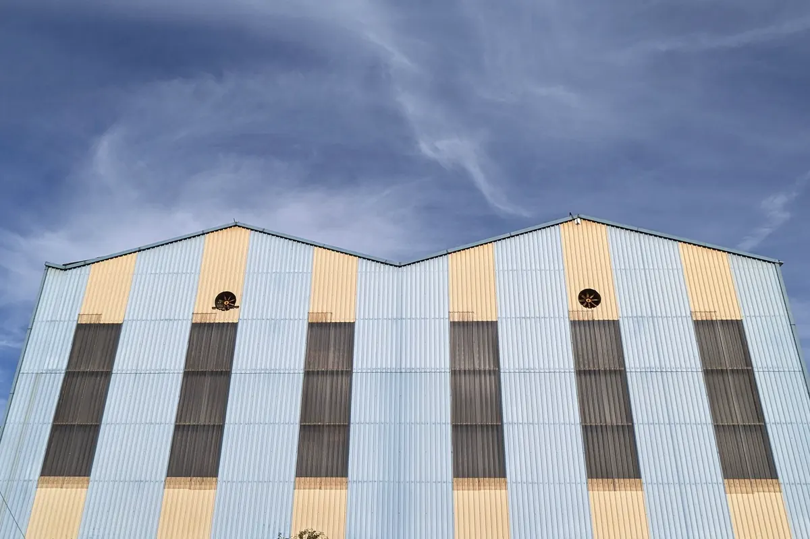
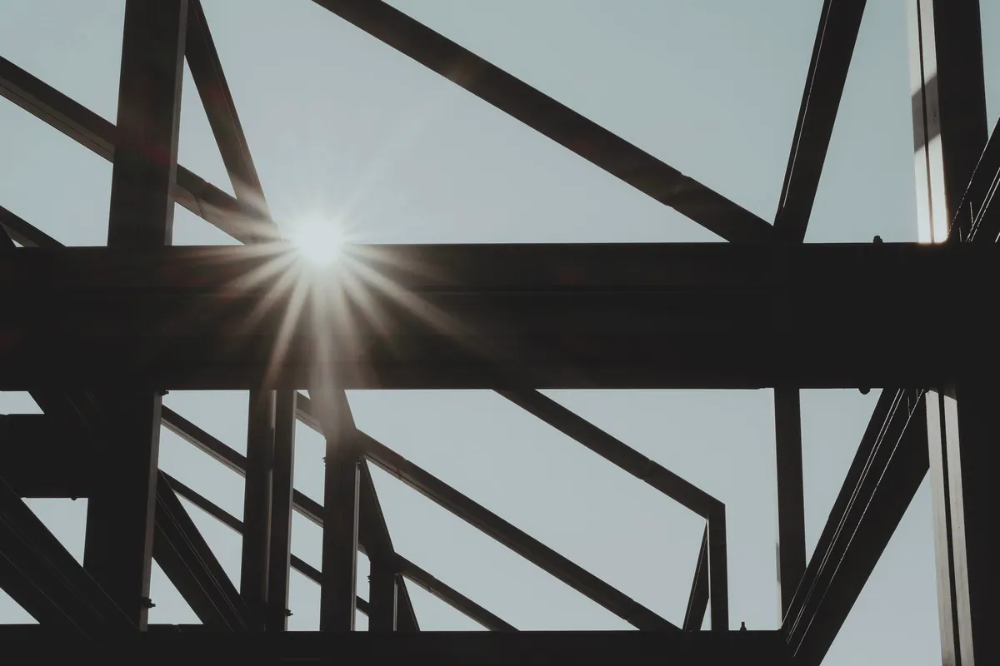

Galpão metálico sob medida, do projeto à montagem
A Axial projeta, fornece o material e monta galpão metálico industrial, logístico e comercial em Vitória, Vila Velha, Serra, Cariacica e no restante da Grande Vitória. Galpão novo, galpão com ponte rolante, mezanino ou ampliação de galpão existente — com cálculo pelas normas, engenheiro responsável e ART registrada no CREA-ES.
Você contrata projeto, material e montagem juntos ou só a etapa que falta. A estrutura vem do fabricante que você escolher: nós especificamos no projeto o que ele precisa entregar, conferimos as peças na chegada e montamos. Esta página trata da estrutura metálica do galpão; fundação, piso industrial e instalações são assunto de construção de galpões e quadras, e o que envolve a obra toda, de obra em estrutura metálica completa.
Por que contratar a Axial para o seu galpão
Engenharia própria, com ART
Engenheiro responsável técnico do cálculo à montagem e ART registrada no CREA-ES em todo serviço.
Projeto, material e montagem
Projeto, fornecimento de perfis, vigas, tubos e chapas e montagem com uma empresa — ou só a etapa que você precisa.
Calculado para o vento do litoral
Estrutura dimensionada pela ABNT NBR 8800 e NBR 14762, com vento pela NBR 6123 e cargas pela NBR 6120.
Proteção contra maresia
Esquema de pintura ou galvanização especificado no projeto para o ambiente litorâneo da Grande Vitória.
Peças especificadas e conferidas
A estrutura vem do fabricante que você escolher. O projeto diz o que ele precisa entregar, e na chegada conferimos marcação, dimensão, furação e pintura antes do içamento.
Montagem segura e documentada
Plano de içamento, NR-18 e NR-35 em campo e entrega com as-built, registros de montagem e ART.

Pórtico de alma cheia ou treliçado: qual estrutura usar
O galpão metálico é uma sequência de pórticos ligados por terças, longarinas e contraventamentos. A forma do pórtico é a primeira decisão do projeto — e a que mais mexe no peso de aço e no número de peças.
| Critério | Pórtico de alma cheia | Treliçado |
|---|---|---|
| Vão livre | Vãos pequenos e médios com folga | Vãos grandes com cobertura leve |
| Pé-direito útil | Viga de cobertura baixa: sobra mais altura livre | A treliça ocupa altura sob a cobertura |
| Peso de aço | Tende a pesar mais em vão grande | Costuma consumir menos aço em vão grande |
| Peças e montagem | Poucas peças, montagem rápida | Muitas peças, ligações e metros de solda |
| Aparência | Linhas limpas, fácil de pintar e inspecionar | Visual de treliça aparente, mais superfície a proteger |
| Ponte rolante | Recebe console e viga de rolamento com naturalidade | Possível, em geral com pilar de alma cheia ou pilar duplo |
| Manutenção no litoral | Menos cantos que acumulam sal e umidade | Mais ligações e cantos para inspecionar e retocar |
Não existe resposta pronta: comparamos as duas soluções para o vão, a altura e as cargas do seu galpão, e a escolha sai do cálculo. Perfis laminados e soldados seguem a ABNT NBR 8800; perfis formados a frio, comuns em terças e treliças leves, a ABNT NBR 14762. O cálculo completo é feito no projeto estrutural.

Vão livre, pé-direito, portões e mezanino
- Vão livre: parte da operação — porta-palete, manobra de empilhadeira, linha de produção. Vão maior que o necessário é aço sem retorno; vão curto trava o layout por décadas.
- Modulação: o espaçamento entre pórticos define terças, longarinas, número de fundações e a posição de portões e docas.
- Pé-direito: medido até a face inferior da cobertura; depende do último nível de armazenagem, do gancho da ponte rolante, de sprinklers e luminárias.
- Portões e docas: portão de enrolar, de correr ou de folhas precisa de quadro estrutural próprio, previsto no projeto e não improvisado depois.
- Mezanino: escritório, vestiário ou estoque leve aproveitando o pé-direito. A sobrecarga segue a ABNT NBR 6120 — mezanino de escritório que vira depósito é problema estrutural.

Galpão com ponte rolante
Ponte rolante muda o galpão de categoria: além da carga içada, a estrutura recebe impacto vertical, esforço horizontal do carro, frenagem longitudinal e milhares de ciclos que exigem verificação de fadiga. O projeto resolve:
- Viga de rolamento dimensionada para carga móvel e fadiga, com flecha limitada e trilho alinhável;
- Console ou pilar escalonado, conforme a capacidade e a classe de utilização da ponte;
- Contraventamento que leve a frenagem até a fundação;
- Reações de base passadas cedo ao projeto de fundação;
- Folgas entre ponte, cobertura e pilares, pelos dados do fabricante da ponte.
Instalar ponte rolante em galpão que já existe é possível em alguns casos, mas só depois de verificar seções, ligações e fundação. A ponte como equipamento (NR-11 e NR-12) é tema de montagem industrial.

Cobertura, fechamento e vento do litoral
Galpão metálico é leve para o tamanho que tem, e o vento governa boa parte das peças — na cobertura, a sucção puxa telha e terça para cima. Calculamos pela ABNT NBR 6123 considerando a exposição ao mar (comum em Serra, Vila Velha e Aracruz) e o portão aberto em dia de ventania, que soma pressão interna à sucção externa.
Telha simples ou sanduíche
| Critério | Telha metálica simples | Telha sanduíche (termoacústica) |
|---|---|---|
| Calor | Transmite o calor do sol para dentro | Núcleo isolante reduz o calor irradiado |
| Ruído de chuva | Alto | Reduzido |
| Condensação | Pode pingar sobre produto e máquina | Controlada pelo isolamento |
| Peso na estrutura | Leve | Mais pesada — a terça é calculada para ela |
| Custo | Menor | Maior |
| Uso típico | Depósito, estoque, área de passagem | Produção com gente trabalhando, loja, produto sensível ao calor |
Fechamento, lanternim e corrosão
- Fechamento lateral: telha metálica sobre longarinas, alvenaria com telha acima ou painel isotérmico. Alvenaria ligada a pilar metálico precisa de junta, senão trinca.
- Lanternim: ventilação natural pela cumeeira; em galpão com fonte de calor, complementado por exaustão industrial.
- Maresia: detalhamento sem frestas que acumulam água, esquema de pintura ou galvanização a fogo e fixadores com revestimento adequado. Estrutura que já perdeu seção é caso de patologias e corrosão estrutural.
Galpão metálico ou pré-moldado de concreto
As duas soluções são boas; o que separa uma da outra:
| Critério | Galpão metálico | Pré-moldado de concreto |
|---|---|---|
| Vão livre grande | Vence com peso próprio baixo | Peças pesadas, exige içamento maior |
| Prazo | As peças saem do fabricante enquanto a fundação é executada | Também industrializado; depende da fila da fábrica |
| Ponte rolante | Console e viga de rolamento integrados ao pórtico | Possível, com consoles previstos no projeto das peças |
| Ampliação futura | Parafusar novos pórticos na empena de expansão | Possível, com mais restrição de ligação |
| Resistência ao fogo | Verificada pela NBR 14323; pode exigir proteção passiva | Melhor desempenho natural |
| Ambiente litorâneo | Exige tratamento anticorrosivo e manutenção de pintura | Menos sensível, mas também exige cobrimento adequado |
| Fundação | Reações menores | Cargas maiores por pilar |
A exigência de resistência ao fogo vem da ABNT NBR 14432 e do Corpo de Bombeiros, conforme uso, área e altura. Muitos galpões acabam mistos: pilares de concreto e cobertura metálica.

Ampliação de galpão metálico
Ampliar em comprimento é continuar a sequência de pórticos; ampliar em largura é criar uma nova nave geminada, dividindo pilar e calha com a existente. Nos dois casos, a estrutura atual é verificada antes de qualquer peça nova ser ligada a ela — seções, ligações, base e o acréscimo de carga de vento e de água na calha comum.
Em galpão novo com chance de crescer, a empena do lado da expansão já é projetada como pórtico intermediário: na ampliação, basta retirar o fechamento e seguir montando. A montagem com a operação vizinha funcionando é planejada em montagem de estruturas metálicas.

Quanto custa um galpão metálico
Preço por metro quadrado sem projeto é número sem base: dois galpões com a mesma área podem ter consumo de aço muito diferente. O que define o preço:
| Fator | Por que pesa no preço |
|---|---|
| Vão livre e pé-direito | Definem o tamanho de pilar e viga — e o peso de aço |
| Ponte rolante | Viga de rolamento, console e pilar reforçado somam aço, peças e montagem |
| Vento e exposição ao mar | Galpão alto e exposto pede mais terças, mais fixação e bases mais robustas |
| Sistema estrutural | Alma cheia ou treliça, perfil laminado, soldado ou formado a frio, base rotulada ou engastada |
| Tratamento anticorrosivo | Esquema para litoral custa mais que pintura de fundo — e economizar aqui aparece em poucos anos |
| Cobertura e fechamento | Telha simples ou sanduíche, translúcidas, lanternim, calhas e rufos |
| Mezanino, portões e docas | Cada um tem estrutura de apoio própria |
| Fabricação das peças | Custo do fabricante que você contratar (corte, furação, solda e pintura de oficina); com o projeto detalhado, as propostas ficam comparáveis |
| Logística e montagem | Acesso ao terreno, porte do guindaste e operação vizinha funcionando |
Com o projeto em mãos, o orçamento fica comparável: o fornecimento de aço estrutural sai em quilos por perfil, a fabricação é orçada pelo fabricante que você escolher com base nos desenhos, e a montagem de estrutura pré-fabricada por frente de trabalho.
Como trabalhamos
Contato pelo WhatsApp
Você manda medidas, uso e endereço. Entregável: retorno do escopo no mesmo dia útil, com o que ainda falta saber.
Visita e concepção
Avaliamos terreno, operação e exposição ao vento. Entregável: concepção do pórtico, vão e modulação.
Proposta
Entregável: proposta com escopo, o que está incluso e o que é opcional, e cronograma da obra.
Projeto estrutural
Cálculo pelas NBR 8800, 14762, 6123 e 6120. Entregável: memorial, detalhamento para o fabricante, desenhos de montagem e ART de projeto.
Material e conferência das peças
Fornecemos perfis, vigas, tubos e chapas quando contratado; as peças são fabricadas pelo fabricante que você escolher, conforme o projeto. Entregável: peças conferidas na chegada (marcação, dimensão, furação e pintura) e não conformidades apontadas.
Montagem em campo
Plano de içamento, ligações parafusadas e soldas de campo, NR-18 e NR-35, prumo e aperto conferidos. Entregável: estrutura, cobertura e fechamento montados, com retoque de pintura.
Entrega com ART
Entregável: as-built, registros de montagem e ART de execução registrada no CREA-ES.
Vai construir ou ampliar um galpão?
Mande largura, comprimento, altura e uso pelo WhatsApp. Retornamos com o escopo no mesmo dia útil.
O que mandar para receber o orçamento
- Largura, comprimento e pé-direito desejados (um croqui à mão serve);
- Uso do galpão: depósito, produção, logística, loja;
- Ponte rolante (capacidade e vão) ou mezanino, se houver;
- Endereço ou bairro, para avaliar vento e maresia;
- Se já existe projeto, fundação ou galpão a ampliar — fotos ajudam;
- Preferência de telha: simples ou sanduíche.
Perguntas frequentes sobre galpão metálico
Quanto custa um galpão metálico?
Depende do vão livre, do pé-direito, da ponte rolante, do vento no local, do tipo de telha e do tratamento anticorrosivo — dois galpões com a mesma área podem ter consumo de aço muito diferente. Por isso não trabalhamos com preço por metro quadrado sem projeto. Mande medidas, uso e endereço pelo WhatsApp e retornamos com o escopo e o caminho para uma proposta fechada.
Qual o prazo para fazer um galpão metálico?
O prazo depende do tamanho, do projeto e da disponibilidade do aço, e é definido na proposta com cronograma. Uma vantagem do galpão metálico é que as peças são produzidas pelo fabricante ao mesmo tempo que a fundação é executada, e a montagem em campo é rápida.
Já tenho projeto. Vocês fornecem o material e montam?
Sim. Fazemos só a etapa que você precisa: fornecimento de material, montagem ou as duas. Antes de montar conferimos o projeto recebido e apontamos o que precisar de ajuste, principalmente vento e proteção contra corrosão no litoral. As peças chegam do fabricante que você contratou e são conferidas na chegada.
Vocês fabricam a estrutura do galpão?
Não. A fabricação das peças (corte, furação, solda e pintura de oficina) é feita pelo fabricante que você contratar. Nós fazemos o projeto, especificamos o que ele precisa entregar, fornecemos o material quando contratado, conferimos as peças na chegada e montamos a estrutura na obra.
Vocês fazem galpão pequeno ou ampliação de galpão existente?
Sim. Fazemos galpão pequeno, ampliação em comprimento, nova nave geminada e mezanino dentro de galpão existente. Na ampliação, a estrutura atual é verificada antes de qualquer peça nova ser ligada a ela.
Dá para instalar ponte rolante em galpão metálico que já existe?
Às vezes dá, mas nunca sem verificação. Levantamos as seções dos pilares, as ligações, a base, a fundação e o contraventamento. Conforme o resultado, a solução pode ser reforço com console, pilares independentes para o caminho de rolamento ou a indicação de que a estrutura não comporta a ponte pretendida.
Vocês atendem minha cidade?
A sede fica em Vila Velha e atendemos toda a Grande Vitória: Vitória, Vila Velha, Serra, Cariacica, Viana, Guarapari e Fundão, além de Anchieta, Aracruz e Linhares. Para outras cidades do Espírito Santo, consulte pelo WhatsApp.
O galpão sai com ART e garantia?
Sim, com ART de projeto e de execução registradas no CREA-ES e engenheiro responsável técnico. Quanto à garantia, vale a lei: o construtor responde pela solidez e segurança da obra por 5 anos, conforme o art. 618 do Código Civil. Na entrega vão o as-built e os registros de montagem.
Galpão metálico na Grande Vitória
Projeto, material e montagem de galpão industrial, logístico e comercial nas cidades da região:
Continue lendo
- Mezanino metálico em galpão, loja e casa
- Tipos de treliça, perfis e aços estruturais
- Estruturas metálicas em Vitória ES — visão geral
- Construção de galpões e quadras: fundação, piso e instalações
- Montagem de estruturas metálicas
- Montagem de estrutura pré-fabricada
- Cobertura metálica para quadra
- Obra em estrutura metálica completa